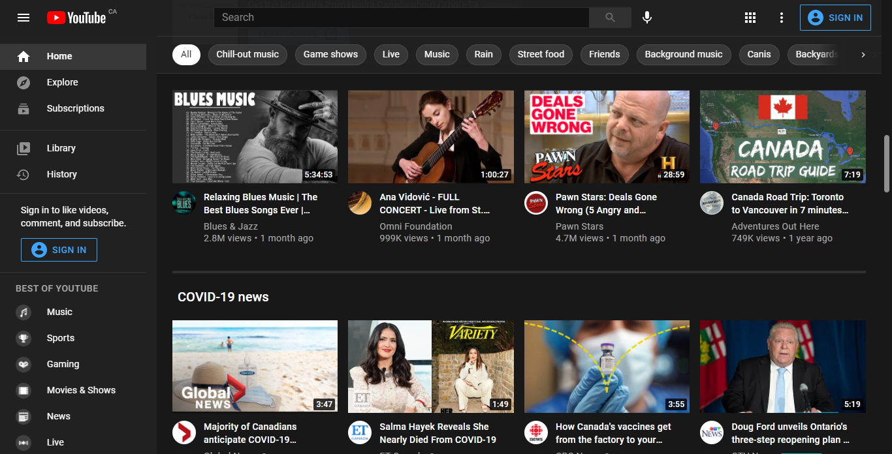

Survey about YouTube's UI
What do you think of the UI on the
YouTube
homepage?

What is your name?
Which of the following UI elements, if any, have an unclear usage?
Three line icon in top left (Used to hide and show panel on left)
Magnifying glass icon in top centre (Used to search)
Microphone icon in top centre (Used to search using voice)
Grid icon in top right (Used to switch Google apps)
Three vertical dots icon in top right (Used to access more options)
Which "Best of YouTube" category are you most likely to watch?
Music
Sports
Gaming
Movies & Shows
News
Live
Which section has the most clear design?
Left panel
Top-middle category chooser
Video list
Any final comments?
Submit
Website designed by Ajay